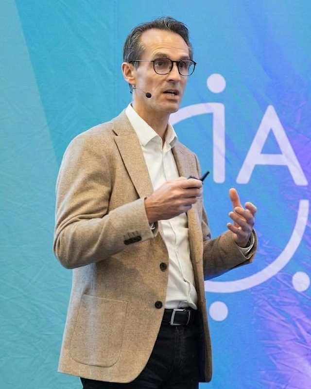

OPERATIONS · PEOPLE · AI · LEAN · EXCELLENCE
J'accompagne les dirigeants qui veulent transformer leur organisation avec l'IA sans perdre ce qui fait leur différence : des équipes engagées, qui apprennent et s'adaptent.
Le Lean pour choisir. L'IA pour accélérer. L'humain pour durer.
Plus humain. Plus digital. Pas un compromis. ET.
LE CONSTAT
Les pilotes se multiplient.
Le passage à l'échelle reste rare. Chaque équipe teste son outil. Peu de résultats arrivent jusqu'au compte de résultat.
6 %
des entreprises sont des « AI high performers ». Elles sont 3 fois plus nombreuses à avoir redessiné leurs workflows.
Source : McKinsey, The State of AI, Global Survey 2026
La différence se joue ailleurs.
Dans les processus, le management et les personnes. Quand l'IA est la même pour tous, l'humain devient le seul avantage qui ne se copie pas.
OPALE
Partir des flux de valeur réels. Pas des cas d'usage à la mode.
Des équipes engagées, apprenantes et adaptables. Des managers qui jouent le rôle de coach.
Des agents et des simulations là où ils créent une valeur mesurable. Et seulement là.
Voir, prioriser, avancer par petits pas. L'amélioration continue appliquée à l'IA.
Ancrer les nouveaux réflexes dans le management et la culture, pour que les gains durent.
OFFRES
01 · DIAGNOSTIC
Où en est votre modèle opérationnel face à 2030 ? Un état des lieux sur quatre shifts : modèle d'organisation, moments qui comptent, workflows redessinés, workforce digital twin.
Livrable : rapport d'écart et priorités d'action.
02 · LEANAI
La matrice Transformation.AI positionne chaque opportunité selon la maturité data et IA, la complexité du changement et la taille de l'impact. Quatre zones claires : Priority, Adoption gap, Tech gap, Double gap.
Livrable : portefeuille priorisé et feuille de route.
03 · WORKFORCE
Former, recruter ou déployer un agent IA ? On ne prévoit plus un seul futur. On simule plusieurs scénarios, en continu, reliés aux programmes et à la stratégie.
Livrable : scénarios make, buy ou agent.
04 · KEYNOTES
Future of Work 2030, The Human Layer, LeanAI. Pour un COMEX, un séminaire de direction ou une conférence.
Format : keynote, fireside chat ou atelier d'une demi-journée.
MÉTHODE
Une méthode issue de l'industrie. Les mêmes principes qui ont transformé la production, appliqués à l'IA.
01
Cartographier les flux de valeur et les irritants réels avec les équipes. Value Stream Mapping.
02
Positionner chaque opportunité dans la matrice Transformation.AI. Choisir peu, choisir juste.
03
Avancer par petits lots, en flux tiré. Des résultats visibles en semaines, pas en années.
04
Former les managers à leur rôle de coach. Mesurer l'adoption. Améliorer en continu.

À PROPOS
25 ans de transformation dans l'industrie : automobile, logiciel, aéronautique. Ingénieur de formation et praticien du Lean, j'ai dirigé des systèmes d'excellence opérationnelle, des transformations digitales à grande échelle et une AI factory.
Intervenant à UNLEASH Paris 2026 sur la gouvernance de l'IA et la workforce intelligence.
Un leader est un coach. Il aide chacun à faire ce qu'il ne se croyait pas capable de faire.
POURQUOI OPALE NEXT
L'opale change de couleur selon l'angle de la lumière. Une transformation fonctionne de la même façon : les mêmes équipes, les mêmes métiers, vus sous un angle nouveau.
Next, parce que la seule question qui compte pour un dirigeant est simple : et maintenant ?
RÉFLEXIONS
30 minutes pour parler de votre transformation. Sans engagement.